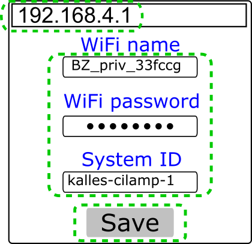

BI-Beacon documentation¶
BI-Beacon Overview¶

BI-Beacons use a RESTful API.
There is only one end-point: /<systemid>.
This endpoint serves as the controlling mechanism for system with ID systemid.
Here is an example of a complete endpoint:
https://api.cilamp.se/v1/our-beautiful-monitor
Multiple beacons can be configured to use the same systemid - this is intentional and means you can deploy several Beacons that indicate the same thing.
This functionality may, for instance, be used if you have multiple offices, or if you want a Beacon both in the conference room and at the coffee machine.
Architecture¶
{kind=link}
- BI-Beacon 1 and 2
- This is either physical or virtual BI-Beacon devices, showing some state of something interesting to your business.
- State Server
- This is the source of state for BI-Beacons.
- Caller systems
- This is the user of the Beacons - where API calls originate.
Background¶
The BI-Beacon architecture is fairly straightforward, however, might need some explanation anyway since it is not the simplest of possible designs and this is intentional.
So let’s begin with the simplest possible design and work our way from there.
Idea 1: direct cable connections¶
If we want to control devices in our offices, the simplest possible idea would be to connect them directly to our computers.
Indeed, this is possible with a BI-Beacon, using a USB data cable connected to a wall-powered PC, but since it requires USB-serial device drivers, as well as the right user/device permissions on the PC in question, this would actually be harder to do than using the REST API over WiFi!
This method also has the drawback of limiting the location of a Beacon to the vicinity of a PC. Also, the software controlling the Beacon would need to be on that PC.
Idea 2: dynamic IP addresses¶
The next natural step after direct connection to a PC would be to connect over the local network - be it over WiFi or an ethernet cable, giving the device a local IP.
So why not use this method?
Well, the reason is corporate IT networks; they’re a mess in general!
Getting a dynamic IP by connecting a device to the network is one thing; DHCP is common enough today that it can be generally relied upon, however, what then? If you want to communicate to a (local) device connected to the (local) network, you would need to know its’ dynamic IP address.
At home, you could just login to your router (at least if your tech savvy enough!) and find the IP-address of the Beacon.
But at work, unless you’re working in the IT department, that is typically out of the question, not only for “security reasons”, but also due to that the IT department most likely already have enough on their hands! And getting them to configure a device to have a static IP is just .. many weeks of delivery time - time none of us has, nor want to put into getting a BI-Beacon up and running.
A drawback of this method is also the ‘local’ part - we cannot control a BI-Beacon unless we’re on the same network. Forget about controlling it from the cloud!
Idea 3: IoT to the rescue!¶
So, as odd as it sounds, it is actually easier to make the device an internet-global device instead of a local (direct cable, or local network) device!
The trick is to have the Beacons retrieve their respective state from a known server (corporate internal or otherwise), via secure HTTPs requests.
This means the devices can get their dynamic, local IP-addresses inside of your fine and dandy corporate network and you address them indirectly by communicating with the state server, which resides either inside your corporate network (at a well-known address) or via the public internet!
As an integrator or user of Bi-Beacons, all you have to do is send off HTTPs requests to the state server (or “API server” if you prefer) which stores the states and serves them to Beacons asking what state to switch to.
It Just Works™! :)
API¶
BI-Beacons are controlled via a RESTful web API, but only indirectly via a state server (see Architecture). This means it is possible to control Beacons from any programming language that can make HTTPs POST requests.
You configure a Beacon to continuously copy the state of a certain system identifier, or systemid for short. A systemid is made up of at least one character. Allowed characters classes are small and big english letters, digits, underscore and dash, or put in regex form:
[a-zA-Z0-9_-]+
A systemid can be up to 255 characters long.
Several Beacons may use the same system identifier; they will then show the same state.
Note: The systemid can be viewed as the access key of the Beacon, as it is all that is needed to control a device. So make sure you only share the systemid with those persons and systems that should be able to control the device. Do not store it publicly unless you want anyone to be able to change the state of your Beacon.
If you want to add some security, randomize a string of at least 30 letters and numbers and use that as the system identifier.
A system can be in one of two states:
| State | Meaning |
|---|---|
| static | BI-Beacon will show a constant color |
| pulsing | BI-Beacons will pulse with a given speed and color |
Static colors give the impression of the state of a system or process, e.g. on or off, ready or failed.
Pulsing colors give the impression of something happening, e.g. something is building or being processed.
The significance of individual colors and pulses is up to your imagination.
Change state¶
| URL: |
|
|---|---|
| Method: | POST |
| Parameters: |
} |
- :beacon-server
- This is the hostname of the state server.
- :systemid
- This is the system identifier you want to change the state of.
Note
At the moment, there is only one official beacon state server. It is available at this URL:
https://api.cilamp.se/v1
Note: the parameters should be transmitted as URL encoded Form Data,
i.e. the request header Content-Type should be
application/x-www-form-urlencoded.
Parameter examples¶
| Purpose: | Set beacon to green |
|---|---|
| Parameters: |
{
color: "#00FF00"
}
| Purpose: | Set beacon to red and pulse once per second |
|---|---|
| Parameters: |
{
color: "#FF0000"
period: 1000
}
Expected response¶
On success
| Code: | 200 |
|---|---|
| Body: |
{"message": "':systemid' updated"}
On error
| Code: | 400 |
|---|---|
| Body: |
{"message": "<error message>"}
Sample Curl Call¶
The following will make a POST request to the BI-Beacon state server
api.cilamp.se to change the state of the system identified by
testsystem to green:
curl -X POST -F "color=#00FF00" "https://api.cilamp.se/v1/testsystem"
Code examples¶
Java¶
import java.io.IOException;
import java.io.InputStream;
import java.io.OutputStream;
import java.net.HttpURLConnection;
import java.net.URL;
import java.net.URLConnection;
import java.util.Map;
public class setBeacon {
public static boolean setColor( String systemid, String color ) {
try {
URLConnection connection = new URL("https://api.cilamp.se/v1/" + systemid).openConnection();
connection.setDoOutput(true);
connection.setRequestProperty("Content-Type", "application/x-www-form-urlencoded");
OutputStream output = connection.getOutputStream();
output.write(("color=" + color).getBytes());
InputStream response = connection.getInputStream();
} catch( Exception e ) {
System.err.println( e );
return false;
}
return true;
}
// Usage: <systemid> <color>
public static void main(String args[]) {
setColor(args[0], args[1]);
}
}
PHP¶
<?php
function bibeacon_set($channelid, $color, $period, $server="https://api.cilamp.se/v1/") {
$options = array(
'http' => array(
'header' => "Content-type: application/x-www-form-urlencoded\r\n",
'method' => 'POST',
'content' => http_build_query(
array("color"=>$color,
"period"=>$period))
)
);
$context = stream_context_create($options);
$result = @file_get_contents($server.$channelid, false, $context);
if ( $result !== FALSE ) {
if ( ($result = @json_decode($result)) !== FALSE ) {
if ( @$result->message === "'".$channelid."' updated" ) {
return TRUE;
} else { echo "Invalid response: ".json_encode($result); }
} else { echo "Server response structure error: ".error_get_last()['message']; }
} else { echo "API Request failed: ".error_get_last()['message']; }
return FALSE;
}
if (php_sapi_name() == "cli") {
if ($argc != 4) {
echo "Usage: $argv[0] <channelid> <color> <period>\n";
exit(1);
} else {
exit((int)bibeacon_set($argv[1], $argv[2], $argv[3]));
}
}
?>
Setup BI-Beacon via Wifi¶
You can setup a BI-Beacon using a mobile or desktop device that connects to the Beacons own setup web page.
| Instructions | |
|---|---|
 |
|
|
|
|  |
|
 |
|
{kind=link}
{kind=link}
Note
To reset or reconfigure a BI-Beacon, reboot it whilst it cannot connect to the router. E.g by doing any of the following:
- Change SSID or password on the router
- Turn off the router temporarily
- Move the BI-Beacon far away from the router
When you plug it in again, BI-Beacon will try to connect and fail. It will then go into setup mode again.
Setup BI-Beacon via USB¶
You can also setup a BI-Beacon using a USB data cable, however this requires that you are on a Linux machine with a user in the dialout usergroup.
Clone the cli repo (see Repositories).
Then, in a terminal of your choice,
$ python config_via_usb.py <ssid> <password> <systemid>
How to contribute¶
BI-Beacon is partially open source; see the following table on what is and what is not open.
Any contributions on any of the open source projects are welcome!
Repositories¶
| What | Open source? | Comment | Link |
|---|---|---|---|
| Docs | Yes | The REST protocol to control Beacons (and everything surrounding it) | Documentation repository |
| CLI | Yes | Comman Line Utilities | Command Line Utilities repository |
| Server | Yes | The state server | Server repository |
| Virtual Beacon | Yes | The virtual Beacon | Virtual beacon repository |
| Artifacts | Yes (but read only) | Automatically generated content from the other repositories | Build Artifacts repository |
| Firmware | No | The software running on physical BI-Beacons |